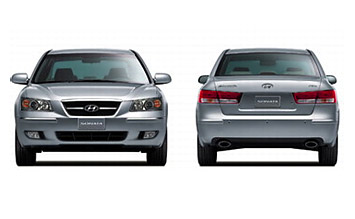
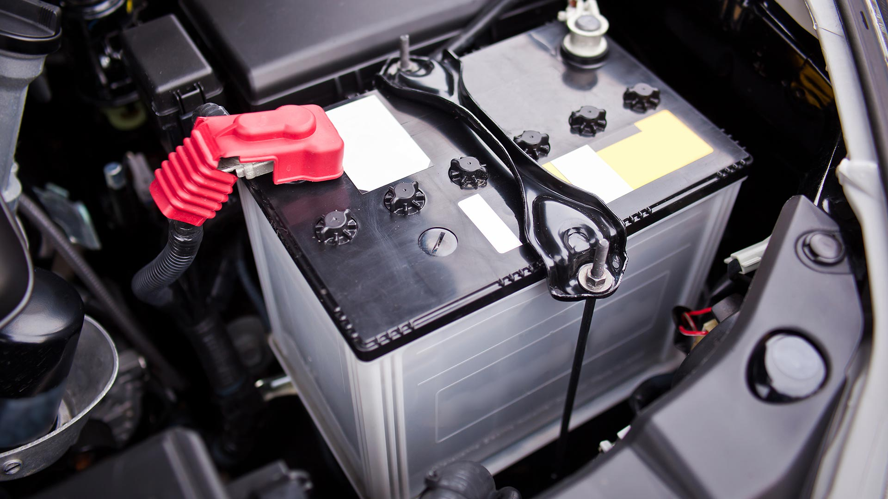

How to Jump a Car Battery
1. Locate your battery
Reference your car's manual for the location of your 12-volt battery or jump points. Most car batteries will be under the hood or below the trunk floor. If located anywhere else, please visit your local mechanic.
2. Power Source
In order to jump your vehicle you will need to have jumper cables to connect to another vehicle.
4. Move Vehicle
Move the move vehicle you will use to jump your car closet to your battery or jump points according to your manual.
5. Identify Terminals
A battery or jump point will have a positive and negative connection. The positive connection is often identified with a red cover or + symbol near the connection. The negative is usually a bear wire with no covering and a - symbol or bare metal surface.
6. Connecting
Ensure that neither postive or negitave end of the cable touch each other as you connect one end to the running vehicle. Connect negitve then postive and repeat with your vehicle connecting negitave then postive.
7. Starting
After your vehicle is connected start your vehicle as normal. If vehicle does not start vist your nearest mechanic.
7. Disconnect
Leave your vehicle running as you discount the jumper cables from either car ensuring postive and negitave ends of the cable does not touch each other while connected to either car.